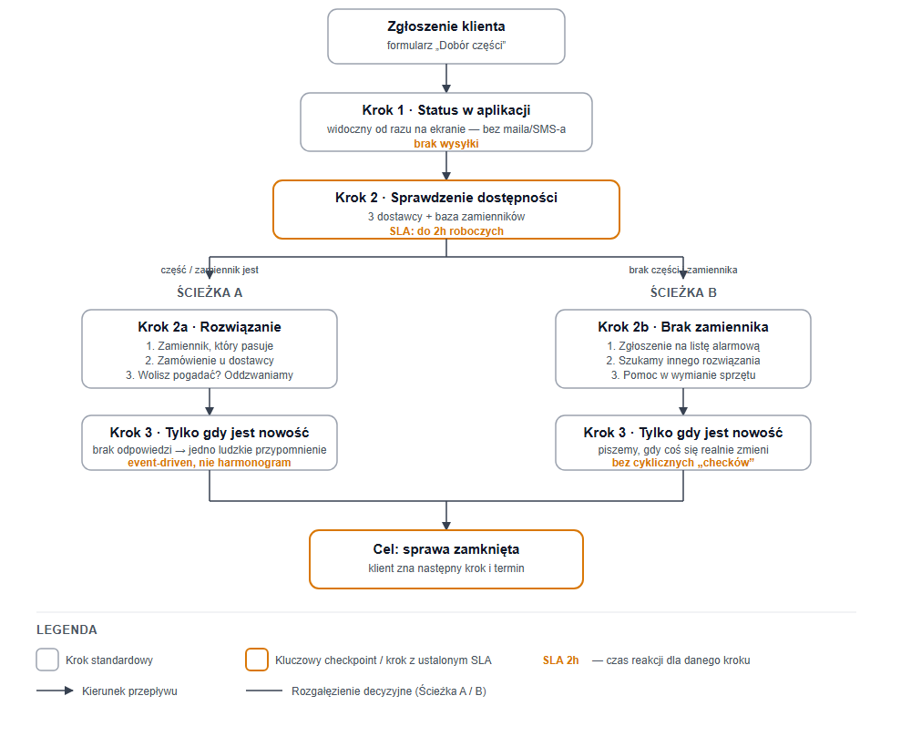

← wróć do hub-a raportów
Scenariusz: brak części w magazynie
Przebieg i czasy reakcji — obsługa klienta przy braku części · scenariusz obsługi klienta
Diagram przepływu

Krok 1 — status w aplikacji (bez maila)
Klient widzi to od razu na ekranie, po kliknięciu „Dalej" — nie wysyłamy osobnego maila ani SMS-a na tym
etapie, bo nic konkretnego jeszcze nie wiemy:
Sprawdzamy to dla Ciebie. Damy znać do 2h roboczych (pon–pt 8–18) z konkretną odpowiedzią.
Krok 2 — jedyna, konkretna wiadomość
SLA: 2h robocze, docelowo 30–60 min
To jedyny mail/SMS, jaki klient dostaje na tym etapie — od razu z pełną informacją i opcjami do wyboru.
Wariant A — jest zamiennik
Cześć [imię],
sprawdziliśmy [nazwa] do [producent] [model] — tej konkretnej części akurat nie mamy, ale przejrzeliśmy
3 dostawców i bazę zamienników, więc mamy dla Ciebie kilka opcji:
- Zamiennik, który pasuje 1:1 do Twojego urządzenia [nazwa + różnica cenowa, jeśli jest].
- Zamówienie u dostawcy zewnętrznego — ok. [X dni roboczych].
- Wolisz pogadać? Oddzwonimy i pomożemy dobrać rozwiązanie.
Napisz, co wybierasz, a resztą zajmiemy się my.
[Imię], [firma]
Wariant B — nie ma ani części, ani zamiennika
Cześć [imię],
sprawdziliśmy wszystko, co mogliśmy — 3 dostawców i bazę zamienników — i [nazwa] do [producent] [model]
po prostu teraz nigdzie nie ma. Nie zostawiamy Cię z tym samego:
- Zgłaszamy Cię na listę alarmową — odezwiemy się, jak tylko część się pojawi (zwykle [X dni/tygodni]).
- Możemy sprawdzić inne rozwiązanie — np. część z demontażu albo inny pasujący producent. Oddzwoni nasz specjalista.
- Jeśli naprawa przestaje się opłacać, pomożemy dobrać nowy sprzęt.
[Imię], [firma]
Krok 3 — tylko gdy jest nowość
SLA: event-driven — bez cyklicznych przypomnień o niczym
Koniec ze sztywnym harmonogramem (24h / co 7 dni). Piszemy do klienta wyłącznie wtedy, gdy naprawdę coś
się zmieniło: część się znalazła, dostawca podał nowy termin, albo klient długo nie odpowiada.
Hej, wciąż pilnujemy Twojej sprawy. Jak któraś opcja Ci pasuje, daj znać — albo zadzwoń, chętnie pomożemy: [numer].
Dlaczego tak
- Mniej wiadomości — piszemy tylko wtedy, gdy mamy coś konkretnego do przekazania, żeby klient nie czuł się zasypywany.
- Ludzki, luźniejszy język zamiast sztywnego skryptu — krótsze zdania, brzmi jak wiadomość od człowieka, nie od systemu.
- Ton pokazuje wysiłek („sprawdziliśmy u 3 dostawców") zamiast suchego „brak na stanie" — to buduje poczucie opieki.
- Zawsze konkretne opcje, nigdy sama odmowa — klient nie zostaje z niczym.
- Podpis z imienia — personalizacja, nie „system".